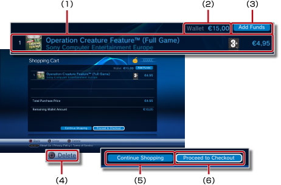
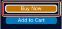
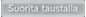
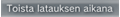

PlayStation®Network > Tuotteiden lataaminen (ostaminen)
Tuotteiden lataaminen (ostaminen)
Tämän toiminnon käyttäminen saattaa edellyttää, että käyttöjärjestelmä päivitetään.
Voit ladata (maksua vastaan tai ilmaiseksi) esimerkiksi pelejä, pelien lisäosia tai videosisältöä, joita on tarjolla  (PlayStation®Store) -kaupassa. Jotta voit ladata tuotteita (ostamalla tai ilmaiseksi) (PlayStation®Store) -toiminnolla, sinun on ensin luotava PlayStation®Network-käyttäjätunnus.
(PlayStation®Store) -kaupassa. Jotta voit ladata tuotteita (ostamalla tai ilmaiseksi) (PlayStation®Store) -toiminnolla, sinun on ensin luotava PlayStation®Network-käyttäjätunnus.
1. |
Valitse |
||||||||||||
|---|---|---|---|---|---|---|---|---|---|---|---|---|---|
2. |
Valitse tuote, jonka haluat ladata (maksua vastaan tai veloituksetta) |
||||||||||||
3. |
Valitse [Add to Cart].
|
||||||||||||
4. |
Voit tuoda seuraavan näytön näkyviin valitsemalla [View Cart]. 
|
||||||||||||
5. |
Valitse [Proceed to Checkout]. |
||||||||||||
6. |
Valitse [Confirm Purchase]. |
||||||||||||
7. |
Valitse ladattava kohde. |

Vihjeitä
- Tuotteet, joita (PlayStation®Store)-kaupasta voi ostaa vaihtelevat maan tai alueen mukaan. Huomaa, että voit asioida vain PlayStation®Network-tiliäsi vastaavan maan tai alueen (PlayStation®Store)-kaupassa.
- Lisätietoja tuotteista, joita voit ladata (maksua vastaan tai veloituksetta) (PlayStation®Store) -kaupasta sekä tietoja ostamisen jälkeisistä palveluista on oman alueen SCE-sivustossa.
- Kun valitset ostettavan tuotteen kohdalla [Buy Now] vaiheessa 3, voit ohittaa ostoskärrysivun ja siirtyä suoraan ostosten vahvistusnäyttöön (vaihe 6). Jos olet tallentanut luottokorttisi tiedot PlayStation®Network-tilille, lompakkoon lisätään rahaa automaattisesti, jos teet ostoksen, johon lompakossa olevat rahat eivät riitä.

- Kun valitset ilmaisen tuotteen kohdalla [Download] (vaiheessa 3), voit ohittaa ostoskärrysivun ja siirtyä suoraan latausnäyttöön (vaihe 7).

- Jos kirjautumistunnus (sähköpostiosoite) ei ole oikea (tai sähköpostiosoite ei ole kelvollinen), vahvistusviestiä ei tule. Käytä voimassa olevaa sähköpostiosoitetta, johon tulevia viestejä voit lukea, kun rekisteröit käyttäjätunnuksen. Voit muuttaa käyttäjätunnusta valitsemalla
 (PlayStation®Network) -kohdasta
(PlayStation®Network) -kohdasta  (Käyttäjätietojen hallinta) >
(Käyttäjätietojen hallinta) >  (Account Information) > [Sign-In ID (E-mail Address)]. Tee muutokset noudattamalla näytössä näkyviä ohjeita.
(Account Information) > [Sign-In ID (E-mail Address)]. Tee muutokset noudattamalla näytössä näkyviä ohjeita. - Osaa (PlayStation®Store) -kaupasta ladatusta (ostetusta) sisällöstä voi käyttää vain laitteissa, jotka on aktivoitu PS3™-järjestelmän kanssa, kuten toisesta PS3™-järjestelmästä tai PSP™-järjestelmästä. Voit ottaa laitteen käyttöön tai poistaa sen käytöstä valitsemalla (PlayStation®Network) -kohdasta (Käyttäjätietojen hallinta) ja valitsemalla sitten
 (System Activation). Toimi näytön ohjeiden mukaisesti.
(System Activation). Toimi näytön ohjeiden mukaisesti. - Jos

näkyy näytössä latauksen aikana, voit käyttää muita toimintoja latauksen aikana. Valitse , jos haluat palata edelliseen näyttöön samalla kun lataus jatkuu. Lisätietoja on tämän oppaan kohdassa (Verkko) >
(Verkko) >  (Latausten hallinta) > [Taustalataus].
(Latausten hallinta) > [Taustalataus]. - Jos

näkyy näytössä latauksen aikana, videota voi toistaa latauksen aikana. Jos valitset , (PlayStation®Store) -kauppa sulkeutuu ja videon toisto alkaa.